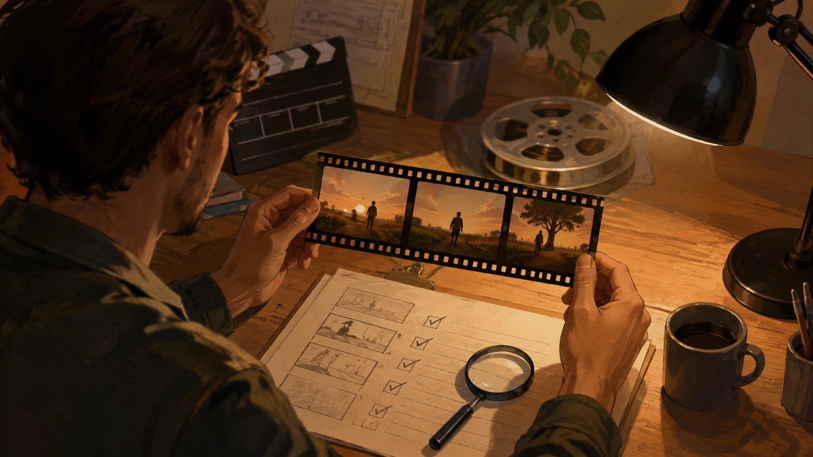

Prompts MiniMax H3 para imagem em vídeo: um briefing claro antes de gerar
Neste guia de prompts MiniMax H3 para imagem em vídeo, o ponto de partida é a imagem de referência e o resultado que a equipe precisa revisar, não uma promessa de qualidade. Na página portuguesa da FLAQ, o endpoint MiniMax H3 Image-to-Video descreve primeiro quadro obrigatório, controle opcional do quadro final, vídeos de 5 a 15 segundos e saída em 768p ou 2K. Use esses limites como um briefing de produção antes de gerar.
Comece pela imagem em vídeo e pelo primeiro quadro
Para cada tomada, descreva o que a imagem inicial precisa fixar: sujeito, enquadramento, proporção, luz e elementos que não podem mudar. Depois, escreva o movimento de forma observável: aproximação, deslocamento de câmera, ação do sujeito e estado final desejado. Se a tomada depender de uma composição final específica, registre também esse quadro final; no endpoint, esse controle é opcional, não uma garantia de resultado.
Ilustração editorial gerada por IA; não é resultado, interface ou teste do MiniMax H3.
Prompts MiniMax H3: use uma ficha de cinco campos
Uma ficha curta evita que “mais detalhes” virem instruções contraditórias:
- Referência: o que a imagem inicial define.
- Ação: o que se move e em que ordem.
- Câmera: ponto de vista, distância e deslocamento.
- Continuidade: o que deve permanecer reconhecível.
- Encerramento: quadro final desejado ou razão para deixá-lo aberto.
O prompt pode incluir uma duração-alvo compatível com o intervalo disponível, mas confirme a configuração atual antes de planejar uma entrega. A página não sustenta uma comparação de desempenho, taxa de sucesso ou preço garantido.
Use receitas do repositório como referência, não como capacidade do endpoint
No snapshot de 1 de setembro de 2026 do commit f639f9d6d0a3273ca85be4461e0a1265cb481387, o repositório Awesome MiniMax H3 Video Prompts tem 84 receitas em 24 categorias. É uma contagem daquele commit, não uma promessa permanente e não “1000+ prompts”. Escolha uma receita pelo risco de produção — por exemplo, continuidade de produto ou clareza de movimento — e adapte a referência, a ação e o encerramento ao seu material com direitos de uso.
Ilustração editorial gerada por IA; representa planejamento, não uma saída de modelo.
O repositório também discute áudio, multimodalidade, edição, continuidade, múltiplas referências e deployment local. Esses exemplos não demonstram que o endpoint FLAQ Image-to-Video aceite tais entradas ou controles. Para este fluxo, mantenha a alegação limitada à imagem inicial, ao quadro final opcional, ao prompt e às opções descritas pela página da FLAQ.
Revise o resultado sem transformar uma tentativa em prova
Antes de usar o vídeo, confira se a ação cabe na duração escolhida, se o sujeito e os elementos importantes permanecem coerentes e se o corte final serve ao próximo plano. Registre a imagem enviada, o texto do prompt, a duração e a resolução escolhida. Isso ajuda a revisar uma nova tentativa sem afirmar que um exemplo prova a superioridade de um modelo.

Ilustração editorial gerada por IA; não é uma demonstração de desempenho ou teste independente.
Conclusão
Para prompts MiniMax H3 de imagem em vídeo, comece pelo primeiro quadro, descreva a ação e a câmera, preserve as restrições de continuidade e decida se o quadro final é necessário. Consulte a página oficial MiniMax H3 Image-to-Video da FLAQ para a configuração vigente.
Divulgação: sou fundador da FLAQ. Este artigo apresenta o nosso serviço MiniMax H3 de imagem em vídeo e recursos de prompts; não relata testes independentes de resultados.